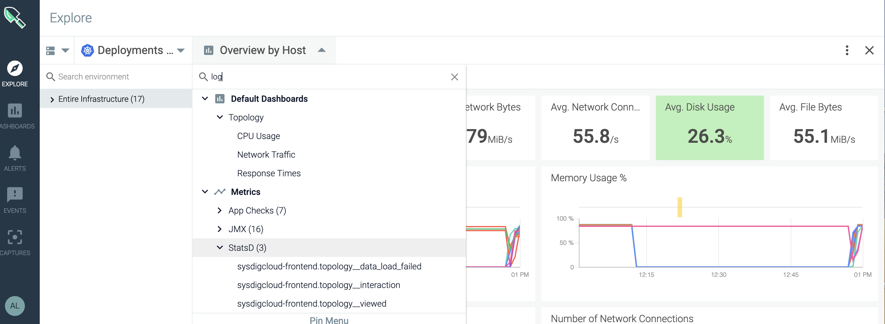

Monitor Log Files
You can search for particular strings within a given log file, and create a metric that is displayed in Sysdig Monitor's Explore page. The metrics appear under the StatsD section:
|  |
Sysdig provides this functionality via a "chisel" script called "logwatcher", written in Lua. You call the script by adding a logwatcher parameter in the chisels section of the agent configuration file (dragent.yaml). You define the log file name and the precise string to be searched. The results are displayed as metrics in the Monitor UI.
Caveats
The logwatcher chisel adds to Sysdig's monitoring capability but is not a fully featured log monitor. Note the following limitations:
No regex support: Sysdig does not offer regex support; you must define the precise log file and string to be searched.
(If you were to supply a string with spaces, forward-slashes, or back-slashes in it, the metric generated would also have these characters and so could not be used to create an alert.)
Limit of 12 string searches/host: Logwatcher is implemented as a LUA script and, due to resources consumed by this chisel, it is not recommended to have more than a dozen string searches configured per agent/host.
Implementation
Edit the agent configuration file to enable the logwatcher chisel. See Understanding the Agent Config Files for editing options.
Preparation
Determine the log file name(s) and string(s) you want to monitor.
Tip
To monitor the output of docker logs <container-name>, find the container's docker log file with:
docker inspect <container-name> | grep LogPath
Edit dragent.yaml
Access
dragent.yamldirectly at/opt/draios/etc/dragent.yaml.Add a chisels entry:
Format:
chisels: - name: logwatcher args: filespattern: YOURFILENAME.log term: YOURSTRINGSample Entry:
customerid: 831f2-your-key-here-d69401 tags: tagname.tagvalue chisels: - name: logwatcher args: filespattern: draios.log term: SentIn this example, Sysdig's own
draios.logis searched for theSentstring.The output, in the Sysdig Monitor UI, would show the StatsD metric
logwatcher.draios_log.Sentand the number of 'Sent' items detected.Optional: Add multiple
-name:sections in the config file to search for additional logs/strings.Note the recommended 12-string/agent limit.
Restart the agent for changes to take effect.
For container agent:
docker restart sysdig-agent
For non-containerized (service) agent:
service dragent restart
Parameters
Name | Value | Description |
|---|---|---|
| | The chisel used in the enterprise Sysdig platform to search log files. (Other chisels are available in Sysdig's open-source product.) |
| | The log file to be searched. Do not specify a path with the file name. |
| | The string to be searched. |
View Log File Metrics in the Monitor UI
To view logwatcher results:
Log in to Sysdig Monitor and select
Explore.Select
Entire Infrastructure > Overview by Host.In the resulting drop-down, either scroll to
Metrics > StatsD > logwatcheror enter "logwatcher" in the search field.Each string you configured in the agent config file will be listed in the format
logwatcher.YOURFILENAME_log.STRING.The relevant metrics are displayed.
Note
You can also create an alert on logwatcher metrics, to be notified when an important log entry appears.